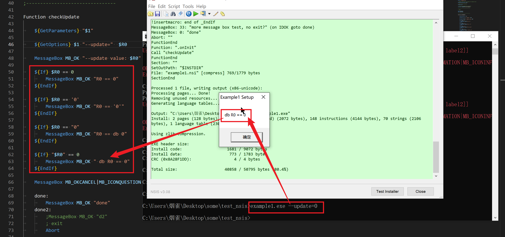

2023-02-20
语法规范
修改于: 2023-02-20注释
注释, 使用 # 或者 ;
导入其他脚本
引入自定义脚本文件, 使用 !include
!include xxx.nsh
使用dll模块
使用dll提供的函数:
plugin::command [parameters]
不止dll, 其他自定义模块也行. 不过都需要先 导入其他脚本 , 使用:
nsExec::Exec "myfile"
变量
自定义
语法(貌似大小写皆可):
Var [/GLOBAL] var_name
变量定义, 使用 Var:
Var xxx
注意定义的变量全部都是全局变量, 若定义在函数内部, 必须使用 /GLOBAL 修饰:
Var /GLOBAL xxx
还可以使用define
!define var_name "var_str"
使用define定义的变量只读, 可在当前脚本全局使用.
预定义
寄存器变量(用于参数传递):
$0, $1, $2, $3, $4, $5, $6, $7, $8, $9 $R0, $R1, $R2, $R3, $R4, $R5, $R6, $R7, $R8, $R9 # 一开始以为是命令行参数, 看了一下仅是预定义的一些变量, 只是不用显示声明而已
可变预定义变量:
$INSTDIR 程序安装路径, 可以使用 StrCpy, ReadRegStr, ReadINIStr, etc 修改.
注意, 如果安装时候更新了路径, 新路径的值会被更新到 `$INSTDIR` (所以固定变量获取 INSTDIR 的方式不可取)
经测试, 一般在 `.onInit` 期间获取的默认的 `$INSTDIR` , 在 `onInit` 函数执行之后才会弹出路径选择,
这时, 选择的路径会将 `$INSTDIR` 覆盖, 在 `.onInit` 后的 `Section` 获取到的 `$INSTDIR` 值是被覆盖修改后的.
$OUTDIR 当前输出目录
$CMDLINE 安装时候的命令行参数, 为整个命令行,
如: xxx.exe parameter1 parameter2 ...
若需要获取其中的参数, 使用 GetParameters (针对普通参数) , GetOptions (针对选项参数) .
见 获取命令行参数_
当命令行存在 ``/D`` 选项参数时, ``$CMDLINE`` 为空.
$LANGUAGE 当前使用的语言
系统变量
系统变量:
$PROGRAMFILES 程序文件目录(通常为 C:\Program Files 但是运行时会检测).
$COMMONFILES 公用文件目录。这是应用程序共享组件的目录(通常为 C:\Program Files\Common Files 但是运行时会检测).
$DESKTOP Windows 桌面目录(通常为 C:\windows\desktop 但是运行时会检测)。该常量的内容(所有用户或当前用户)取决于 SetShellVarContext 设置。默认为当前用户。
$EXEDIR 安装程序运行时的位置。(从技术上来说你可以修改改变量, 但并不是一个好方法).
${NSISDIR} 包含 NSIS 安装目录的一个标记。在编译时会检测到。常用于在你想调用一个在 NSIS 目录下的资源时, 例如: 图标、界面……
$WINDIR Windows 目录(通常为 C:\windows 或 C:\winnt 但在运行时会检测)
$SYSDIR Windows 系统目录(通常为 C:\windows\system 或 C:\winnt\system32 但在运行时会检测)
$TEMP 系统临时目录(通常为 C:\windows\temp 但在运行时会检测)
$STARTMENU 开始菜单目录(常用于添加一个开始菜单项, 使用 CreateShortCut)。该常量的内容(所有用户或当前用户)取决于 SetShellVarContext 设置。默认为当前用户。
$SMPROGRAMS 开始菜单程序目录(当你想定位 $STARTMENU\程序 时可以使用它)。该常量的内容(所有用户或当前用户)取决于 SetShellVarContext 设置。默认为当前用户。
$SMSTARTUP 开始菜单程序/启动 目录。该常量的内容(所有用户或当前用户)取决于 SetShellVarContext 设置。默认为当前用户。
$QUICKLAUNCH 在 IE4 活动桌面及以上的快速启动目录。如果快速启动不可用, 仅仅返回和 $TEMP 一样。
$DOCUMENTS 文档目录。一个当前用户典型的路径形如 C:\Documents and Settings\Foo\My Documents。这个常量的内容(所有用户或当前用户)取决于 SetShellVarContext 设置。默认为当前用户。
该常量在 Windows 95 且 Internet Explorer 4 没有安装时无效。
$SENDTO 该目录包含了“发送到”菜单快捷项。
$RECENT 该目录包含了指向用户最近文档的快捷方式。
$FAVORITES 该目录包含了指向用户网络收藏夹、文档等的快捷方式。这个常量的内容(所有用户或当前用户)取决于 SetShellVarContext 设置。默认为当前用户。
该常量在 Windows 95 且 Internet Explorer 4 没有安装时无效。
$MUSIC 用户的音乐文件目录。这个常量的内容(所有用户或当前用户)取决于 SetShellVarContext 设置。默认为当前用户。
该常量仅在 Windows XP、ME 及以上才有效。
$PICTURES 用户的图片目录。这个常量的内容(所有用户或当前用户)取决于 SetShellVarContext 设置。默认为当前用户。
该常量仅在 Windows 2000、XP、ME 及以上才有效。
$VIDEOS 用户的视频文件目录。这个常量的内容(所有用户或当前用户)取决于 SetShellVarContext 设置。默认为当前用户。
该常量仅在 Windows XP、ME 及以上才有效。
$NETHOOD 该目录包含了可能存在于我的网络位置、网上邻居文件夹的链接对象。
该常量在 Windows 95 且 Internet Explorer 4 和活动桌面没有安装时无效。
$FONTS 系统字体目录。
$TEMPLATES 文档模板目录。这个常量的内容(所有用户或当前用户)取决于 SetShellVarContext 设置。默认为当前用户。
$APPDATA 应用程序数据目录。当前用户路径的检测需要 Internet Explorer 4 及以上。所有用户路径的检测需要 Internet Explorer 5 及以上。这个常量的内容(所有用户或当前用户)取决于 SetShellVarContext 设置。默认为当前用户。
该常量在 Windows 95 且 Internet Explorer 4 和活动桌面没有安装时无效。
$PRINTHOOD 该目录包含了可能存在于打印机文件夹的链接对象。
该常量在 Windows 95 和 Windows 98 上无效。
$INTERNET_CACHE Internet Explorer 的临时文件目录。
该常量在 Windows 95 和 Windows NT 且 Internet Explorer 4 和活动桌面没有安装时无效。
$COOKIES Internet Explorer 的 Cookies 目录。
该常量在 Windows 95 和 Windows NT 且 Internet Explorer 4 和活动桌面没有安装时无效。
$HISTORY Internet Explorer 的历史记录目录。
该常量在 Windows 95 和 Windows NT 且 Internet Explorer 4 和活动桌面没有安装时无效。
$PROFILE 用户的个人配置目录。一个典型的路径如 C:\Documents and Settings\Foo。
该常量在 Windows 2000 及以上有效。
$ADMINTOOLS 一个保存管理工具的目录。这个常量的内容(所有用户或当前用户)取决于 SetShellVarContext 设置。默认为当前用户。
该常量在 Windows 2000、ME 及以上有效。
$RESOURCES 该资源目录保存了主题和其他 Windows 资源(通常为 C:\Windows\Resources 但在运行时会检测).
该常量在 Windows XP 及以上有效。
$RESOURCES_LOCALIZED
该本地的资源目录保存了主题和其他 Windows 资源(通常为 C:\Windows\Resources\1033 但在运行时会检测).
该常量在 Windows XP 及以上有效。
$CDBURN_AREA 一个在烧录 CD 时储存文件的目录。.
该常量在 Windows XP 及以上有效。
$HWNDPARENT 父窗口的十进制 HWND。
$PLUGINSDIR 该路径是一个临时目录, 当第一次使用一个插件或一个调用 InitPluginsDir 时被创建。该文件夹当解压包退出时会被自动删除。这个文件夹的用意是用来保存给 InstallOptions 使用的 INI 文件、启动画面位图或其他插件运行需要的文件。
部分特殊字符
部分特殊字符:
$$: 表示$ $\r: 表示\r $\n: 表示\n $\t: 表示\t
if语句
语法:
${If} $0 == 1
# do something
${EndIf}
还有:
${OrIf} 即 or
${AndIf} 即 and
特意测试了一下, 比较的时候加不加引号无影响.

测试引号判断
测试源码.
消息框(MessageBox)
显示一个包含“消息框文本”的消息框。“消息框选项列表”必须为 mb_option_list 的一个或多个, 多个使用 | 来隔开
语法:
MessageBox mb_option_list messagebox_text [/SD return] [return_check jumpto [return_check_2 jumpto_2]]
各个部分释义:
mb_option_list:
MB_OK 展示 OK 按钮 MB_OKCANCEL 展示 OK, CANCEL 按钮 MB_ABORTRETRYIGNORE 展示 ABORT, RETRY, IGNORE 按钮. 退出、重试、忽略按钮 MB_RETRYCANCEL 展示 retry, cancel 按钮 MB_YESNO 展示 yes and no buttons MB_YESNOCANCEL 展示 with yes, no, cancel buttons MB_ICONEXCLAMATION 展示 with exclamation icon. 显示惊叹号图标 MB_ICONINFORMATION 展示 with information icon. 显示信息图标 MB_ICONQUESTION 展示 with question mark icon. 显示问号图标 MB_ICONSTOP 展示 with stop icon. 显示终止图标 MB_USERICON 展示 installer's icon MB_TOPMOST 置顶 messagebox. 使消息框在最前端显示 MB_SETFOREGROUND 设置前景? (Set foreground) MB_RIGHT 文本靠右对齐 MB_RTLREADING RTL reading order. RTL 阅读次序 MB_DEFBUTTON1 Button 1 is default MB_DEFBUTTON2 Button 2 is default MB_DEFBUTTON3 Button 3 is default MB_DEFBUTTON4 Button 4 is default
return_check:
0 empty left off # can be 0 (or empty, or left off) IDABORT Abort button IDCANCEL Cancel button IDIGNORE Ignore button IDNO No button IDOK OK button IDRETRY Retry button IDYES Yes button
传参(如返回值设置等)
- 关键字:
- 函数返回值
- nsis返回值
语法:
Push 'xxx' Pop $0
栈的形式, Push压栈, 获取就Pop
如, 返回值的函数:
Function simpleTest
MessageBox MB_OKCANCEL|MB_ICONQUESTION \
"点击确定取消"\
/SD IDOK \
IDOK ok \
IDCANCEL cancel # 这里算是调用 MessageBox 后的回调
ok:
Push "OK"
Goto +2
cancel:
Push "CANCEL"
FunctionEnd
在.oninit中调用如下:
Function .onInit
Call simpleTest
Pop $0 # 这里获取返回值
${If} $0 == "CANCEL"
MessageBox MB_OK|MB_ICONEXCLAMATION "点击的是取消"
${Else}
MessageBox MB_OK|MB_ICONEXCLAMATION "点击的是确定"
${EndIf}
FunctionEnd
macros(宏)
编译时, 插入代码
宏与 NSIS_自定义函数 类似, 使用有个较明显的区别是:
- 宏定义后支持在几乎任何位置的插入
- 函数定义后, 若要同时支持在卸载的时候调用, 需要加 un. 前缀再写一个
例:
; 定义宏
!macro MyFunc UN
Function ${UN}MyFunc
Call ${UN}DoRegStuff
ReadRegStr $0 HKLM Software\MyProgram key
DetailPrint $0
FunctionEnd
!macroend
!insertmacro MyFunc ""
!insertmacro MyFunc "un."
结果将会插入两个, 一个给安装时候用, 一个给卸载时候用, 也可以直接:
; 定义宏
!macro MyFunc
Call ${UN}DoRegStuff
ReadRegStr $0 HKLM Software\MyProgram key
DetailPrint $0
!macroend
!insertmacro MyFunc
!insertmacro MyFunc
效果一致.
一些脚本属性
NAME : 设置安装器名称 (支持多个, 多语言设置时使用, 默认使用第一个). 如:
Name "Foo & Bar" "Foo && Bar"
InstallDir : 设置默认的安装路径
OutFile : 打好的exe包输出路径(包含文件名)
ShowInstDetails : 值为 show 表示显示安装详细信息
ShowUnInstDetails : 值为 show 表示显示卸载详细信息
BrandingText : 左下角提示信息 (一般是 品牌/公司 名称)
一些通用属性, 编译标志, 版本信息: instattribs